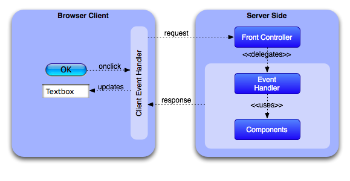
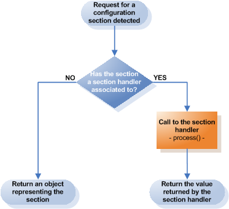

<table cellpadding="10" cellspacing="0" width="100%" border="0"><tr><td valign="top">
<div><a name=""></a><h1>Overview</h1>
  <div class="ref-purpose"></div>
 <div class="ref-synopsis"></div>
<h2>Table of Contents</h2>
<ul>

<a href="../Lion/tutorial_Lion.Overview.pkg.html#intro">Introduction</a><br />

<a href="../Lion/tutorial_Lion.Overview.pkg.html#theframework">The framework</a><br />

&nbsp;&nbsp;&nbsp;<a href="../Lion/tutorial_Lion.Overview.pkg.html#theframework.dependency_injection">Dependency injection</a><br />

&nbsp;&nbsp;&nbsp;<a href="../Lion/tutorial_Lion.Overview.pkg.html#theframework.request_dispatcher">The request dispatcher and the intercepting filter</a><br />

&nbsp;&nbsp;&nbsp;<a href="../Lion/tutorial_Lion.Overview.pkg.html#theframework.seo">The url rewrite engine</a><br />

&nbsp;&nbsp;&nbsp;<a href="../Lion/tutorial_Lion.Overview.pkg.html#theframework.mvc">The model-view-controller</a><br />

&nbsp;&nbsp;&nbsp;<a href="../Lion/tutorial_Lion.Overview.pkg.html#theframework.component-model">The component model</a><br />

&nbsp;&nbsp;&nbsp;<a href="../Lion/tutorial_Lion.Overview.pkg.html#theframework.components">Custom components</a><br />

&nbsp;&nbsp;&nbsp;<a href="../Lion/tutorial_Lion.Overview.pkg.html#theframework.security_layer">The security layer</a><br />

&nbsp;&nbsp;&nbsp;<a href="../Lion/tutorial_Lion.Overview.pkg.html#theframework.configuration">The configuration and section handlers</a><br />

&nbsp;&nbsp;&nbsp;<a href="../Lion/tutorial_Lion.Overview.pkg.html#theframework.classloader">The class loader</a><br />

&nbsp;&nbsp;&nbsp;<a href="../Lion/tutorial_Lion.Overview.pkg.html#theframework.what_else">What else?</a><br />
</ul>

 <p></p>
 <span><a name="intro"></a><h2>Introduction</h2><p>Lion is an emerging open source PHP framework for creating rich web applications as a combination of the most valuable features and patterns taken from the development community.</p></span>
 <span><a name="theframework"></a><h2>The framework</h2><p>One of the most fundamental piece within the framework is the <strong>context container</strong>.</p>
  <p>Lion framework is organized by contexts, where each context represents a concrete application. At the very high level, a context is just a space where instances collaborate together without interfering with other contexts. i.e., a context manages his own session and cache, avoiding conflicts with other contexts running at the same time.</p>
  <p>A context is linked to a physical directory where application's classes and configuration files are contained in. Each context is bound to a single directory, being able to handle his own configuration and classes.</p>
  <p>The first context that lion loads is the one representing the main application (also known as <strong>application context</strong>).<br />
  Getting the application context is really simple: there is a singleton instance representing it. The context also exposes some accessor to retrieve context contained instances such the session or the configuration.<br />
  i.e.
  <div class="listing"><pre><ol><li><div class="src-line"><span class="src-php">&lt;?php</span></div></li>
<li><div class="src-line">&nbsp;</div></li>
<li><div class="src-line"><span class="src-comm">//get&nbsp;the&nbsp;application&nbsp;context:</span></div></li>
<li><div class="src-line"><span class="src-var">$application_context&nbsp;</span>=&nbsp;<span class="src-id"><a href="../Context/__ApplicationContext.html">__ApplicationContext</a></span><span class="src-sym">::</span><a href="../Context/__ApplicationContext.html#methodgetInstance">getInstance</a><span class="src-sym">(</span><span class="src-sym">)</span><span class="src-sym">;</span></div></li>
<li><div class="src-line">&nbsp;</div></li>
<li><div class="src-line"><span class="src-comm">//get&nbsp;the&nbsp;context&nbsp;configuration:</span></div></li>
<li><div class="src-line"><span class="src-var">$configuration&nbsp;</span>=&nbsp;<span class="src-var">$application_context</span><span class="src-sym">-&gt;</span><span class="src-id">getConfiguration</span><span class="src-sym">(</span><span class="src-sym">)</span><span class="src-sym">;</span></div></li>
<li><div class="src-line">&nbsp;</div></li>
<li><div class="src-line"><span class="src-comm">//get&nbsp;the&nbsp;context&nbsp;session:</span></div></li>
<li><div class="src-line"><span class="src-var">$session&nbsp;</span>=&nbsp;<span class="src-var">$application_context</span><span class="src-sym">-&gt;</span><span class="src-id">getSession</span><span class="src-sym">(</span><span class="src-sym">)</span><span class="src-sym">;</span></div></li>
<li><div class="src-line">&nbsp;</div></li>
<li><div class="src-line"><span class="src-comm">//get&nbsp;the&nbsp;context&nbsp;cache:</span></div></li>
<li><div class="src-line"><span class="src-var">$cache&nbsp;</span>=&nbsp;<span class="src-var">$application_context</span><span class="src-sym">-&gt;</span><span class="src-id">getCache</span><span class="src-sym">(</span><span class="src-sym">)</span><span class="src-sym">;</span></div></li>
</ol></pre></div></p>
  <a name="theframework.dependency_injection"></a><h3>Dependency injection</h3><p>One of the most interesting capability of the context container is the known as <strong>Dependency Injection</strong> (aka inversion of control or <i>IoC</i>), being today's latest development craze.</p>
   <p>Software components (Clients) are often a part of a set of collaborating components which depend upon other components (Services) to successfully complete their intended purpose. In many scenarios, they need to know 'which' components to communicate with, 'where' to locate them, and 'how' to communicate with them. When the way such services can be accessed is changed, such changes can potentially require the source of lot of clients to be changed.</p>
   <p>One way of structuring the code is to have the clients declare their dependency on services, and have some &quot;external&quot; piece of code assume the responsibility of locating and/or instantiating the services and simply supplying the relevant service references to the clients when needed. With this method, client code typically is not required to be changed when the way to locate an external dependency changes. This type of implementation is what's known as dependency injection.</p>
   <p>In lion we can declare the dependencies in the context configuration file and let the framework work out the complexities of service instantiation, initialization, sequencing and supplies the service references to the clients as required.  This way to declare dependencies is based on Spring XML-style.</p>
   <p><div class="listing"><pre><ol><li><div class="src-line"><span class="src-php">&lt;?</span><span class="src-id">xml&nbsp;version&nbsp;</span>=&nbsp;<span class="src-str">&quot;1.0&quot;&nbsp;</span><span class="src-id">standalone</span>=<span class="src-str">&quot;yes&quot;</span><span class="src-php">?&gt;</span></div></li>
<li><div class="src-line">&lt;configuration&gt;</div></li>
<li><div class="src-line">&nbsp;</div></li>
<li><div class="src-line">&nbsp;&nbsp;&lt;context-instances&gt;</div></li>
<li><div class="src-line">&nbsp;</div></li>
<li><div class="src-line">&nbsp;&nbsp;&nbsp;&nbsp;&lt;context-instance&nbsp;id=&quot;userDao&quot;&nbsp;class=&quot;UserDao&quot;&gt;</div></li>
<li><div class="src-line">&nbsp;&nbsp;&nbsp;&nbsp;&nbsp;&nbsp;&lt;property&nbsp;name=&quot;dataSource&quot;&nbsp;ref=&quot;mysqlDataSource&quot;/&gt;</div></li>
<li><div class="src-line">&nbsp;&nbsp;&nbsp;&nbsp;&lt;/context-instance&gt;</div></li>
<li><div class="src-line">&nbsp;</div></li>
<li><div class="src-line">&nbsp;&nbsp;&nbsp;&nbsp;&lt;context-instance&nbsp;id=&quot;mysqlDataSource&quot;&nbsp;class=&quot;DataSource&quot;&gt;</div></li>
<li><div class="src-line">&nbsp;&nbsp;&nbsp;&nbsp;&nbsp;&nbsp;&lt;property&nbsp;name=&quot;dataEngine&quot;&gt;&lt;value&gt;mysql&lt;/value&gt;&lt;/property&gt;</div></li>
<li><div class="src-line">&nbsp;&nbsp;&nbsp;&nbsp;&nbsp;&nbsp;&lt;property&nbsp;name=&quot;host&quot;&gt;&lt;value&gt;localhost&lt;/value&gt;&lt;/property&gt;</div></li>
<li><div class="src-line">&nbsp;&nbsp;&nbsp;&nbsp;&nbsp;&nbsp;&lt;property&nbsp;name=&quot;user&quot;&gt;&lt;value&gt;lion&lt;/value&gt;&lt;/property&gt;</div></li>
<li><div class="src-line">&nbsp;&nbsp;&nbsp;&nbsp;&nbsp;&nbsp;&lt;property&nbsp;name=&quot;password&quot;&gt;&lt;value&gt;rocks&lt;/value&gt;&lt;/property&gt;</div></li>
<li><div class="src-line">&nbsp;&nbsp;&nbsp;&nbsp;&lt;/context-instance&gt;</div></li>
<li><div class="src-line">&nbsp;</div></li>
<li><div class="src-line">&nbsp;&nbsp;&lt;/context-instances&gt;</div></li>
<li><div class="src-line">&nbsp;&nbsp;</div></li>
<li><div class="src-line">&lt;/configuration&gt;</div></li>
</ol></pre></div>
   Each context container manages his own instances. In fact, the mechanism of locating object references is by calling to the appropriate context accessor:
   <div class="listing"><pre><ol><li><div class="src-line"><span class="src-php">&lt;?php</span></div></li>
<li><div class="src-line">&nbsp;</div></li>
<li><div class="src-line"><span class="src-comm">//get&nbsp;the&nbsp;context&nbsp;instance&nbsp;userDao</span></div></li>
<li><div class="src-line"><span class="src-var">$user_dao&nbsp;</span>=&nbsp;<span class="src-id"><a href="../Context/__ApplicationContext.html">__ApplicationContext</a></span><span class="src-sym">::</span><a href="../Context/__ApplicationContext.html#methodgetInstance">getInstance</a><span class="src-sym">(</span><span class="src-sym">)</span><span class="src-sym">-&gt;</span><span class="src-id">getContextInstance</span><span class="src-sym">(</span><span class="src-str">'userDao'</span><span class="src-sym">)</span><span class="src-sym">;</span></div></li>
</ol></pre></div></p><br />
  <a name="theframework.request_dispatcher"></a><h3>The request dispatcher and the intercepting filter</h3><p>Lion defines a complete infrastructure of modules and classes to dispatch and transform client requests in terms of application components.<br />
   The request dispatching mechanism receives many different types of requests, which require varied types of processing. Some requests are simply forwarded to a concrete controller, while other requests must be modified, audited, or uncompressed before being further processed.</p>
   <p>When a request enters on Lion, it often must pass several entrance tests prior to the main processing stage. i.e. perform the user authentication, switch the language, validate certain constraints, ...</p>
   <p>The key to solving this problem in a flexible and unobtrusive manner is to have a simple mechanism for adding and removing processing components, in which each component completes a specific filtering action. This pattern is known as intercepting filter, which is one of the most interesting features on Lion request dispatcher system.<br />
   The filters intercept incoming requests and outgoing responses, allowing preprocessing and post-processing. We are able to add and remove these filters unobtrusively, without requiring changes to our existing code.</p>
   <div class="listing"><pre><ol><li><div class="src-line"><span class="src-php">&lt;?php</span></div></li>
<li><div class="src-line">&nbsp;</div></li>
<li><div class="src-line"><span class="src-key">class&nbsp;</span><span class="src-id">CurrencyFilter&nbsp;</span><span class="src-key">extends&nbsp;</span><a href="../Filter/__Filter.html">__Filter</a>&nbsp;<span class="src-sym">{</span></div></li>
<li><div class="src-line">&nbsp;&nbsp;&nbsp;&nbsp;</div></li>
<li><div class="src-line">&nbsp;&nbsp;&nbsp;&nbsp;<span class="src-doc">/**</span></div></li>
<li><div class="src-line"><span class="src-doc">&nbsp;&nbsp;&nbsp;&nbsp;&nbsp;*&nbsp;Change&nbsp;the&nbsp;currency&nbsp;in&nbsp;session&nbsp;by&nbsp;a&nbsp;given&nbsp;one&nbsp;if&nbsp;the</span></div></li>
<li><div class="src-line"><span class="src-doc">&nbsp;&nbsp;&nbsp;&nbsp;&nbsp;*&nbsp;currency&nbsp;parameter&nbsp;is&nbsp;present&nbsp;within&nbsp;the&nbsp;request.</span></div></li>
<li><div class="src-line"><span class="src-doc">&nbsp;&nbsp;&nbsp;&nbsp;&nbsp;*</span></div></li>
<li><div class="src-line"><span class="src-doc">&nbsp;&nbsp;&nbsp;&nbsp;&nbsp;*/</span></div></li>
<li><div class="src-line">&nbsp;&nbsp;&nbsp;&nbsp;<span class="src-key">public&nbsp;</span><span class="src-key">function&nbsp;</span><span class="src-id">preFilter</span><span class="src-sym">(</span><span class="src-id">__IRequest&nbsp;</span><span class="src-sym">&amp;</span><span class="src-var">$request</span><span class="src-sym">,&nbsp;</span><span class="src-id">__IResponse&nbsp;</span><span class="src-sym">&amp;</span><span class="src-var">$response</span><span class="src-sym">)&nbsp;</span><span class="src-sym">{</span></div></li>
<li><div class="src-line">&nbsp;&nbsp;&nbsp;&nbsp;&nbsp;&nbsp;&nbsp;&nbsp;<span class="src-key">if</span><span class="src-sym">(</span><span class="src-var">$request</span><span class="src-sym">-&gt;</span><span class="src-id">hasParameter</span><span class="src-sym">(</span><span class="src-str">'currency'</span><span class="src-sym">))&nbsp;</span><span class="src-sym">{</span></div></li>
<li><div class="src-line">&nbsp;&nbsp;&nbsp;&nbsp;&nbsp;&nbsp;&nbsp;&nbsp;&nbsp;&nbsp;&nbsp;&nbsp;<span class="src-var">$currency_iso_code&nbsp;</span>=&nbsp;<span class="src-var">$request</span><span class="src-sym">-&gt;</span><span class="src-id">getParameter</span><span class="src-sym">(</span><span class="src-str">'currency'</span><span class="src-sym">)</span><span class="src-sym">;</span></div></li>
<li><div class="src-line">&nbsp;&nbsp;&nbsp;&nbsp;&nbsp;&nbsp;&nbsp;&nbsp;&nbsp;&nbsp;&nbsp;&nbsp;<span class="src-comm">//set&nbsp;the&nbsp;currency&nbsp;iso&nbsp;code&nbsp;within&nbsp;the&nbsp;CurrencyManager</span></div></li>
<li><div class="src-line">&nbsp;&nbsp;&nbsp;&nbsp;&nbsp;&nbsp;&nbsp;&nbsp;&nbsp;&nbsp;&nbsp;&nbsp;<span class="src-comm">//singleton&nbsp;instance:</span></div></li>
<li><div class="src-line">&nbsp;&nbsp;&nbsp;&nbsp;&nbsp;&nbsp;&nbsp;&nbsp;&nbsp;&nbsp;&nbsp;&nbsp;<span class="src-id">CurrencyManager</span><span class="src-sym">::</span><span class="src-id">getInstance</span><span class="src-sym">(</span><span class="src-sym">)</span><span class="src-sym">-&gt;</span></div></li>
<li><div class="src-line">&nbsp;&nbsp;&nbsp;&nbsp;&nbsp;&nbsp;&nbsp;&nbsp;&nbsp;&nbsp;&nbsp;&nbsp;&nbsp;&nbsp;&nbsp;&nbsp;&nbsp;&nbsp;&nbsp;&nbsp;&nbsp;&nbsp;&nbsp;&nbsp;&nbsp;&nbsp;&nbsp;&nbsp;&nbsp;<span class="src-id">setCurrencyIsoCode</span><span class="src-sym">(</span><span class="src-var">$currency_iso_code</span><span class="src-sym">)</span><span class="src-sym">;</span></div></li>
<li><div class="src-line">&nbsp;&nbsp;&nbsp;&nbsp;&nbsp;&nbsp;&nbsp;&nbsp;<span class="src-sym">}</span></div></li>
<li><div class="src-line">&nbsp;&nbsp;&nbsp;&nbsp;<span class="src-sym">}</span></div></li>
<li><div class="src-line">&nbsp;&nbsp;&nbsp;&nbsp;</div></li>
<li><div class="src-line"><span class="src-sym">}</span></div></li>
</ol></pre></div>
   <p>Filters are executed before giving the control to the front controller (preFilter) and after returning the response to the client (postFilter).<br />
   Filters can be associated to routes declaratively within the configuration.</p>
   <div class="listing"><pre><ol><li><div class="src-line"><span class="src-php">&lt;?</span><span class="src-id">xml&nbsp;version&nbsp;</span>=&nbsp;<span class="src-str">&quot;1.0&quot;&nbsp;</span><span class="src-id">standalone</span>=<span class="src-str">&quot;yes&quot;</span><span class="src-php">?&gt;</span></div></li>
<li><div class="src-line">&nbsp;</div></li>
<li><div class="src-line">&lt;configuration&gt;</div></li>
<li><div class="src-line">&nbsp;</div></li>
<li><div class="src-line">&nbsp;&nbsp;&lt;filters&gt;</div></li>
<li><div class="src-line">&nbsp;</div></li>
<li><div class="src-line">&nbsp;&nbsp;&nbsp;&nbsp;&lt;filter&nbsp;name=&quot;myFilter&quot;&nbsp;class=&quot;MyFilter&quot;&gt;</div></li>
<li><div class="src-line">&nbsp;&nbsp;&nbsp;&nbsp;&nbsp;&nbsp;&lt;apply-to&gt;</div></li>
<li><div class="src-line">&nbsp;&nbsp;&nbsp;&nbsp;&nbsp;&nbsp;&nbsp;&nbsp;&lt;route&nbsp;id=&quot;myRoute&quot;/&gt;</div></li>
<li><div class="src-line">&nbsp;&nbsp;&nbsp;&nbsp;&nbsp;&nbsp;&lt;/apply-to&gt;</div></li>
<li><div class="src-line">&nbsp;&nbsp;&nbsp;&nbsp;&lt;/filter&gt;&nbsp;&nbsp;</div></li>
<li><div class="src-line">&nbsp;&nbsp;&nbsp;&nbsp;</div></li>
<li><div class="src-line">&nbsp;&nbsp;&lt;/filters&gt;</div></li>
<li><div class="src-line">&nbsp;&nbsp;</div></li>
<li><div class="src-line">&lt;/configuration&gt;</div></li>
</ol></pre></div><br />
  <a name="theframework.seo"></a><h3>The url rewrite engine</h3><p>This is the Lion native <strong>URL rewrite engine</strong>, delegating the URL parsing from the webserver to Lion itself.</p>
   <p>URL rewriting is a method of creating search engine friendly URLs, also known as SEO (Search Engine Optimization) URLs. Dynamic URLs have apparently a negative effect on search engine ranking. To get around this issue the URL rewriting technique is used. URL rewrite tools can examine a website and produce a simplified link for each resource on the website.</p>
   <p>i.e. the link:</p>
     <font face="Courier New">http://yourdomain.com/index.php?module=invoices&amp;view_id=10948</font>
   <p>can be changed to</p>
     <font face="Courier New">http://yourdomain.com/invoices/10948.html</font>
   <p>Different URL formats accepted by Lion are specified within route definitions. A route is a way to describe the mapping between an URL and how to <i>route</i> the execution flow.<br />
   A route defines a pattern for the URL, in pure perl compatible regular expression syntax. First found route matching an URL will be the one used to process the request.</p>
   <p>A route defines the following components:</p>
   <ul><li>Which front controller will attend the request.</li>
     <li>Which action/controller will be executed.</li>
     <li>Which other parameters will be appended to the request.</li></ul>
   <p>Because URL formats are sensible to be changed, Lion provides a class designed to cover the translation between url and route components in 2 directions: This class exposes methods to discompound an URL into components as well as to do the inverse task, to compose an URL as from the components.</p><br />
  <a name="theframework.mvc"></a><h3>The model-view-controller</h3><p>Many frameworks follow the Model View Controller (MVC) architectural pattern to separate the data model, business rules and user interface.</p>
   <p>Most MVC frameworks follow a push-based architecture. These frameworks use actions that do the required processing, and then &quot;push&quot; the data to the view layer to render the results.</p>
   <p>An alternative to this is pull-based architecture, sometimes also called &quot;component-based&quot;. These frameworks start with the view layer, which can then &quot;pull&quot; results from multiple controllers as needed. In this architecture, multiple controllers can be involved with a single view.</p>
   <p>So, which MVC has lion?<br />
   Both of them: Lion integrates a push-based MVC really similar to spring's approach, but also implements a proprietary pull-based approach.<br />
   Both cooperate together in harmony during the execution life-cycle.</p><br />
  <a name="theframework.component-model"></a><h3>The component model</h3><p>The lion <strong>component model</strong> may be one of the key pieces of the framework:<br />
   It reduces drastically the amount of code needed to bound UI component representation to server side instances, handling the following aspects:</p>
   <ul><li>How component status are propagated between client and server</li>
     <li>How client events are sent synchronous or asynchronously to server.</li>
     <li>How events are dispatched on server</li></ul>
   <p>The way to handle an event is as simple as writing a single method to do that. No extra declarations to let lion know that a concrete event need to be handled by the server side. Changes are bound between client and server automagically.<br />
   In the other hand, by handling an event we are able to execute a world of operations such retrieve or update components status, access to the model, check security stuffs, manipulate the nagivation flow, ...</p>
   <p>i.e., to shows the 'FoO BaR!' string on myLabel component once the user has click on the button myButton, a single method with just 2 lines of code:
   <div class="listing"><pre><ol><li><div class="src-line"><span class="src-php">&lt;?php</span></div></li>
<li><div class="src-line">&nbsp;</div></li>
<li><div class="src-line"><span class="src-key">class&nbsp;</span><span class="src-id">FooBarEventHandler&nbsp;</span><span class="src-key">extends&nbsp;</span><a href="../ComponentModel/__EventHandler.html">__EventHandler</a>&nbsp;<span class="src-sym">{</span></div></li>
<li><div class="src-line">&nbsp;</div></li>
<li><div class="src-line">&nbsp;&nbsp;&nbsp;&nbsp;<span class="src-doc">/**</span></div></li>
<li><div class="src-line"><span class="src-doc">&nbsp;&nbsp;&nbsp;&nbsp;&nbsp;*&nbsp;Set&nbsp;the&nbsp;'FoO&nbsp;BaR!'&nbsp;string&nbsp;to&nbsp;the&nbsp;myLabel&nbsp;text</span></div></li>
<li><div class="src-line"><span class="src-doc">&nbsp;&nbsp;&nbsp;&nbsp;&nbsp;*&nbsp;property&nbsp;when&nbsp;click&nbsp;the&nbsp;myButton&nbsp;component</span></div></li>
<li><div class="src-line"><span class="src-doc">&nbsp;&nbsp;&nbsp;&nbsp;&nbsp;*</span></div></li>
<li><div class="src-line"><span class="src-doc">&nbsp;&nbsp;&nbsp;&nbsp;&nbsp;*/</span></div></li>
<li><div class="src-line">&nbsp;&nbsp;&nbsp;&nbsp;<span class="src-key">public&nbsp;</span><span class="src-key">function&nbsp;</span><span class="src-id">myButton_click</span><span class="src-sym">(</span><span class="src-sym">)&nbsp;</span><span class="src-sym">{</span></div></li>
<li><div class="src-line">&nbsp;&nbsp;&nbsp;&nbsp;&nbsp;&nbsp;&nbsp;&nbsp;<span class="src-comm">//retrieve&nbsp;the&nbsp;component&nbsp;myLabel</span></div></li>
<li><div class="src-line">&nbsp;&nbsp;&nbsp;&nbsp;&nbsp;&nbsp;&nbsp;&nbsp;<span class="src-var">$my_label&nbsp;</span>=&nbsp;<span class="src-var">$this</span><span class="src-sym">-&gt;</span><span class="src-id">getComponent</span><span class="src-sym">(</span><span class="src-str">'myLabel'</span><span class="src-sym">)</span><span class="src-sym">;</span></div></li>
<li><div class="src-line">&nbsp;&nbsp;&nbsp;&nbsp;&nbsp;&nbsp;&nbsp;&nbsp;<span class="src-comm">//assign&nbsp;the&nbsp;'FoO&nbsp;BaR!'&nbsp;to&nbsp;the&nbsp;text&nbsp;property</span></div></li>
<li><div class="src-line">&nbsp;&nbsp;&nbsp;&nbsp;&nbsp;&nbsp;&nbsp;&nbsp;<span class="src-var">$my_label</span><span class="src-sym">-&gt;</span><span class="src-id">setText</span><span class="src-sym">(</span><span class="src-str">'FoO&nbsp;BaR!'</span><span class="src-sym">)</span><span class="src-sym">;</span></div></li>
<li><div class="src-line">&nbsp;&nbsp;&nbsp;&nbsp;<span class="src-sym">}</span></div></li>
<li><div class="src-line">&nbsp;</div></li>
<li><div class="src-line">&nbsp;&nbsp;&nbsp;&nbsp;</div></li>
<li><div class="src-line"><span class="src-sym">}</span></div></li>
</ol></pre></div>
   We don't have to care about how to propagate the click event from client to server or how to call to this method once the event has been received on server side. Just 2 lines of code is enough.</p>
   
   <p>Lion handles asynchronous calls to the server by using one of the most exciting technology: <strong>Ajax</strong>.<br />
   Ajax helped the Web to be faster by reducing the CPU load on the servers for tasks that are mostly cosmetic and have almost no interference in the application business logic.</p>
   <p>When an event has raised, lion uses the Ajax call not just to send the event notification but client info that has changed since last time the component model was synchronized.</p><br />
  <a name="theframework.components"></a><h3>Custom components</h3><p>In fact, component is more like a synonym of reusability: We don't want to develop again and again the same calendar widget.</p>
   <p>Lion has been designed to make pretty easy the creation of new components, as this is a really common practice on application development.<br />
   It has a clear separation between the component logic and the UI rendering, allowing several representations over the same components for several client types.</p>
   <p>There are some pieces within Lion destined to ease the binding between component's properties and client representation:<br />
   Lion understand the end-point concept associated to terminal pieces envolved on client-server synchronization. A client end-point is the piece on the client side, i.e. a javascript object property. Analog to the server end-point, i.e. a component property.</p>
   <p>Lion exposes an API to establish bindings between client and server end-points. i.e. to bind the value property of a textbox component to the HTML input value representing it.</p>
   <div class="listing"><pre><ol><li><div class="src-line"><span class="src-php">&lt;?php</span></div></li>
<li><div class="src-line">&nbsp;</div></li>
<li><div class="src-line"><span class="src-key">class&nbsp;</span><a href="../ComponentModel/__InputBoxHtmlWriter.html">__InputBoxHtmlWriter</a>&nbsp;<span class="src-key">extends&nbsp;</span><a href="../ComponentModel/__ComponentWriter.html">__ComponentWriter</a>&nbsp;<span class="src-sym">{</span></div></li>
<li><div class="src-line">&nbsp;&nbsp;&nbsp;&nbsp;</div></li>
<li><div class="src-line">&nbsp;&nbsp;&nbsp;&nbsp;<span class="src-doc">/**</span></div></li>
<li><div class="src-line"><span class="src-doc">&nbsp;&nbsp;&nbsp;&nbsp;&nbsp;*&nbsp;bind&nbsp;a&nbsp;given&nbsp;component's&nbsp;property&nbsp;(value)&nbsp;with&nbsp;an&nbsp;HTML</span></div></li>
<li><div class="src-line"><span class="src-doc">&nbsp;&nbsp;&nbsp;&nbsp;&nbsp;*&nbsp;element&nbsp;property.</span></div></li>
<li><div class="src-line"><span class="src-doc">&nbsp;&nbsp;&nbsp;&nbsp;&nbsp;*&nbsp;</span></div></li>
<li><div class="src-line"><span class="src-doc">&nbsp;&nbsp;&nbsp;&nbsp;&nbsp;*/</span></div></li>
<li><div class="src-line">&nbsp;&nbsp;&nbsp;&nbsp;<span class="src-key">public&nbsp;</span><span class="src-key">function&nbsp;</span><a href="../ComponentModel/__InputBoxHtmlWriter.html#methodbindComponentToClient">bindComponentToClient</a><span class="src-sym">(</span><span class="src-id">__IComponent&nbsp;</span><span class="src-sym">&amp;</span><span class="src-var">$component</span><span class="src-sym">)&nbsp;</span><span class="src-sym">{</span></div></li>
<li><div class="src-line">&nbsp;&nbsp;&nbsp;&nbsp;&nbsp;&nbsp;&nbsp;&nbsp;<span class="src-id"><a href="../ComponentModel/__UIBindingManager.html">__UIBindingManager</a></span><span class="src-sym">::</span><a href="../ComponentModel/__UIBindingManager.html#methodgetInstance">getInstance</a><span class="src-sym">(</span><span class="src-sym">)</span><span class="src-sym">-&gt;</span><span class="src-id">bind</span><span class="src-sym">(</span></div></li>
<li><div class="src-line">&nbsp;&nbsp;&nbsp;&nbsp;&nbsp;&nbsp;&nbsp;&nbsp;&nbsp;&nbsp;&nbsp;&nbsp;<span class="src-comm">//server&nbsp;end-point:</span></div></li>
<li><div class="src-line">&nbsp;&nbsp;&nbsp;&nbsp;&nbsp;&nbsp;&nbsp;&nbsp;&nbsp;&nbsp;&nbsp;&nbsp;<span class="src-key">new&nbsp;</span><span class="src-id"><a href="../ComponentModel/__ComponentProperty.html">__ComponentProperty</a></span><span class="src-sym">(</span><span class="src-var">$component</span><span class="src-sym">,&nbsp;</span><span class="src-str">'value'</span><span class="src-sym">)</span><span class="src-sym">,&nbsp;</span></div></li>
<li><div class="src-line">&nbsp;&nbsp;&nbsp;&nbsp;&nbsp;&nbsp;&nbsp;&nbsp;&nbsp;&nbsp;&nbsp;&nbsp;<span class="src-comm">//client&nbsp;end-point:</span></div></li>
<li><div class="src-line">&nbsp;&nbsp;&nbsp;&nbsp;&nbsp;&nbsp;&nbsp;&nbsp;&nbsp;&nbsp;&nbsp;&nbsp;<span class="src-key">new&nbsp;</span><span class="src-id"><a href="../ComponentModel/__HtmlElementProperty.html">__HtmlElementProperty</a></span><span class="src-sym">(</span><span class="src-var">$component</span><span class="src-sym">-&gt;</span><span class="src-id">getId</span><span class="src-sym">(</span><span class="src-sym">)</span><span class="src-sym">,&nbsp;</span><span class="src-str">'value'</span><span class="src-sym">))</span><span class="src-sym">;</span></div></li>
<li><div class="src-line">&nbsp;&nbsp;&nbsp;&nbsp;<span class="src-sym">}</span></div></li>
<li><div class="src-line">&nbsp;&nbsp;&nbsp;&nbsp;</div></li>
<li><div class="src-line">&nbsp;&nbsp;&nbsp;&nbsp;...</div></li>
</ol></pre></div><br />
  <a name="theframework.security_layer"></a><h3>The security layer</h3><p>Lion security layer is a <strong>RBAC</strong> designed to solve most of the authentication and authorization related tasks.<br />
   The RBAC, which means Role Based Access Control, is an access control pattern which defines one of the most flexible ways to administer access permissions.</p>
   <p>This pattern defines a world of permissions and roles where we can protect some pieces of our web application, known formally as system resources. Each system resource has an associed permission, more like a lock requiring a concrete key. Each user has a set of roles. A role allow to access to a system resource if the required permission is covered by the role. i.e., an user with the role READ_POSTS could read posts on a forum while an user with the role WRITE_POSTS could create new posts but at the same time read existing posts.</p>
   <p>Thanks to the dependency injection configuration facility, we can easily define the security layer by declaring involved instances and dependency between them.</p>
   <div class="listing"><pre><ol><li><div class="src-line"><span class="src-php">&lt;?</span><span class="src-id">xml&nbsp;version&nbsp;</span>=&nbsp;<span class="src-str">&quot;1.0&quot;&nbsp;</span><span class="src-id">standalone</span>=<span class="src-str">&quot;yes&quot;</span><span class="src-php">?&gt;</span></div></li>
<li><div class="src-line">&lt;configuration&gt;</div></li>
<li><div class="src-line">&nbsp;</div></li>
<li><div class="src-line">&nbsp;&nbsp;&lt;context-instances&gt;</div></li>
<li><div class="src-line">&nbsp;&nbsp;&nbsp;&nbsp;</div></li>
<li><div class="src-line">&nbsp;&nbsp;&nbsp;&nbsp;&lt;instance&nbsp;id=&quot;authenticationManager&quot;&nbsp;class=&quot;__AuthenticationManager&quot;&gt;</div></li>
<li><div class="src-line">&nbsp;&nbsp;&nbsp;&nbsp;&nbsp;&nbsp;&lt;property&nbsp;name=&quot;authenticators&quot;&gt;</div></li>
<li><div class="src-line">&nbsp;&nbsp;&nbsp;&nbsp;&nbsp;&nbsp;&nbsp;&nbsp;&lt;list&gt;</div></li>
<li><div class="src-line">&nbsp;&nbsp;&nbsp;&nbsp;&nbsp;&nbsp;&nbsp;&nbsp;&nbsp;&nbsp;&lt;ref&nbsp;id=&quot;authenticator&quot;/&gt;</div></li>
<li><div class="src-line">&nbsp;&nbsp;&nbsp;&nbsp;&nbsp;&nbsp;&nbsp;&nbsp;&lt;/list&gt;</div></li>
<li><div class="src-line">&nbsp;&nbsp;&nbsp;&nbsp;&nbsp;&nbsp;&lt;/property&gt;</div></li>
<li><div class="src-line">&nbsp;&nbsp;&nbsp;&nbsp;&lt;/instance&gt;</div></li>
<li><div class="src-line">&nbsp;</div></li>
<li><div class="src-line">&nbsp;&nbsp;&nbsp;&nbsp;&lt;instance&nbsp;id=&quot;authenticator&quot;&nbsp;class=&quot;__Authenticator&quot;&gt;</div></li>
<li><div class="src-line">&nbsp;&nbsp;&nbsp;&nbsp;&nbsp;&nbsp;&lt;property&nbsp;name=&quot;userLoader&quot;&gt;</div></li>
<li><div class="src-line">&nbsp;&nbsp;&nbsp;&nbsp;&nbsp;&nbsp;&nbsp;&nbsp;&lt;ref&nbsp;id=&quot;userLoader&quot;/&gt;</div></li>
<li><div class="src-line">&nbsp;&nbsp;&nbsp;&nbsp;&nbsp;&nbsp;&lt;/property&gt;</div></li>
<li><div class="src-line">&nbsp;&nbsp;&nbsp;&nbsp;&lt;/instance&gt;</div></li>
<li><div class="src-line">&nbsp;&nbsp;&nbsp;&nbsp;</div></li>
<li><div class="src-line">&nbsp;&nbsp;&nbsp;&nbsp;&lt;instance&nbsp;id=&quot;userLoader&quot;&nbsp;class=&quot;__UserLoader&quot;/&gt;</div></li>
<li><div class="src-line">&nbsp;&nbsp;&nbsp;&nbsp;</div></li>
<li><div class="src-line">&nbsp;&nbsp;&lt;/context-instances&gt;</div></li>
<li><div class="src-line">&nbsp;&nbsp;</div></li>
<li><div class="src-line">&lt;/configuration&gt;</div></li>
</ol></pre></div><br />
  <a name="theframework.configuration"></a><h3>The configuration and section handlers</h3><p>Based on .net framework, the premise for the Lion configuration system is simple: to provide developers with a consistent manner for storing and reading configuration information.</p>
   <p>The Lion configuration system features an extensible infrastructure opened for extension, providing the following benefits:</p>
   <ul><li>Configuration information is allowed to be stored in several formats (XML, .ini files, ...) as well as several sources (files, database, ...). In that sense, Lion offers a flexible way to organize the configuration within an application.</li>
     <li>Configuration information is cached once it has been parsed and transformed. So there are not performance penalties in that sense.</li>
     <li>Lion configuration system is extensible. You can define new configuration parameters and write configuration section handlers to process them.</li></ul>
   <p>The Lion Configuration System provides several classes for programmatic access to the configuration settings. One of the key features within the configuration system is the capability to intercept a request for getting a concrete configuration section and execute a filter to transform the section in terms of application components.</p>
   
   <p>By ussing section handlers we get 2 main benefits: to parse configuration fragments on demand and to uncouple configuration parsing classes from configuration consumers.</p><br />
  <a name="theframework.classloader"></a><h3>The class loader</h3><p>I'm really bored about writing <strong>include directives</strong> on my PHP files, do you?<br />
   For that reason, one of the first features that was added to Lion framework was the <strong>class loader</strong>, a class in charge of include every php file just when needed.</p>
   <p>Lion redirects the __autoload callback to the class loader, making possible to include any missing class files on demand. In the other hand, the class loader knows where is located every class by reading from some xml files, known as includepath files.</p>
   <p>In an includepath file We can declare where is located a concrete class, but we can also specify a naming convention for a set of classes by ussing a pattern, easing the maintenance. Imagine that sometime a class can be loaded by just following what naming convention we have defined.</p>
   <div class="listing"><pre><ol><li><div class="src-line"><span class="src-php">&lt;?</span><span class="src-id">xml&nbsp;version&nbsp;</span>=&nbsp;<span class="src-str">&quot;1.0&quot;&nbsp;</span><span class="src-id">standalone</span>=<span class="src-str">&quot;yes&quot;</span><span class="src-php">?&gt;</span></div></li>
<li><div class="src-line">&lt;classes&gt;</div></li>
<li><div class="src-line">&nbsp;</div></li>
<li><div class="src-line">&nbsp;&nbsp;&lt;!--&nbsp;Components&nbsp;--&gt;</div></li>
<li><div class="src-line">&nbsp;&nbsp;&lt;cluster&nbsp;name=&quot;Components&quot;&nbsp;path=&quot;/libs/components/...&quot;&gt;</div></li>
<li><div class="src-line">&nbsp;&nbsp;&nbsp;&nbsp;&lt;class&nbsp;name=&quot;*&quot;&nbsp;file=&quot;*.class.php&quot;/&gt;</div></li>
<li><div class="src-line">&nbsp;&nbsp;&nbsp;&nbsp;&lt;interface&nbsp;name=&quot;*&quot;&nbsp;file=&quot;*.interface.php&quot;/&gt;</div></li>
<li><div class="src-line">&nbsp;&nbsp;&lt;/cluster&gt;</div></li>
<li><div class="src-line">&nbsp;</div></li>
<li><div class="src-line">&nbsp;&nbsp;&lt;!--&nbsp;Event&nbsp;Handlers&nbsp;--&gt;</div></li>
<li><div class="src-line">&nbsp;&nbsp;&lt;cluster&nbsp;name=&quot;Event&nbsp;Handlers&quot;&nbsp;path=&quot;/libs/eventhandlers/...&quot;&gt;</div></li>
<li><div class="src-line">&nbsp;&nbsp;&nbsp;&nbsp;&lt;class&nbsp;name=&quot;*&quot;&nbsp;file=&quot;*.class.php&quot;/&gt;</div></li>
<li><div class="src-line">&nbsp;&nbsp;&nbsp;&nbsp;&lt;interface&nbsp;name=&quot;*&quot;&nbsp;file=&quot;*.interface.php&quot;/&gt;</div></li>
<li><div class="src-line">&nbsp;&nbsp;&lt;/cluster&gt;</div></li>
<li><div class="src-line">&nbsp;</div></li>
<li><div class="src-line">&nbsp;&nbsp;&lt;!--&nbsp;Controllers&nbsp;--&gt;</div></li>
<li><div class="src-line">&nbsp;&nbsp;&lt;cluster&nbsp;name=&quot;Controllers&quot;&nbsp;path=&quot;/libs/controllers/...&quot;&gt;</div></li>
<li><div class="src-line">&nbsp;&nbsp;&nbsp;&nbsp;&lt;class&nbsp;name=&quot;*&quot;&nbsp;file=&quot;*.class.php&quot;/&gt;</div></li>
<li><div class="src-line">&nbsp;&nbsp;&nbsp;&nbsp;&lt;interface&nbsp;name=&quot;*&quot;&nbsp;file=&quot;*.interface.php&quot;/&gt;</div></li>
<li><div class="src-line">&nbsp;&nbsp;&lt;/cluster&gt;</div></li>
<li><div class="src-line">&nbsp;&nbsp;</div></li>
<li><div class="src-line">&nbsp;&nbsp;&lt;!--&nbsp;Model&nbsp;classes&nbsp;--&gt;</div></li>
<li><div class="src-line">&nbsp;&nbsp;&lt;cluster&nbsp;name=&quot;Model&quot;&nbsp;path=&quot;/libs/model/...&quot;&gt;</div></li>
<li><div class="src-line">&nbsp;&nbsp;&nbsp;&nbsp;&lt;class&nbsp;name=&quot;*&quot;&nbsp;file=&quot;*.class.php&quot;/&gt;</div></li>
<li><div class="src-line">&nbsp;&nbsp;&nbsp;&nbsp;&lt;interface&nbsp;name=&quot;*&quot;&nbsp;file=&quot;*.interface.php&quot;/&gt;</div></li>
<li><div class="src-line">&nbsp;&nbsp;&lt;/cluster&gt;</div></li>
<li><div class="src-line">&nbsp;</div></li>
<li><div class="src-line">&nbsp;&nbsp;&lt;!--&nbsp;Plugin&nbsp;classes&nbsp;--&gt;</div></li>
<li><div class="src-line">&nbsp;&nbsp;&lt;cluster&nbsp;name=&quot;Plugins&quot;&nbsp;path=&quot;/libs/plugins/...&quot;&gt;</div></li>
<li><div class="src-line">&nbsp;&nbsp;&nbsp;&nbsp;&lt;class&nbsp;name=&quot;*&quot;&nbsp;file=&quot;*.class.php&quot;/&gt;</div></li>
<li><div class="src-line">&nbsp;&nbsp;&nbsp;&nbsp;&lt;interface&nbsp;name=&quot;*&quot;&nbsp;file=&quot;*.interface.php&quot;/&gt;</div></li>
<li><div class="src-line">&nbsp;&nbsp;&lt;/cluster&gt;</div></li>
<li><div class="src-line">&nbsp;&nbsp;</div></li>
<li><div class="src-line">&lt;/classes&gt;</div></li>
</ol></pre></div>
   <p>There are 3 main benefits on using the class loader:</p>
   <ul><li>To avoid the use of include directives within php files. On small project this doesn't matter, but on relative big projects it becomes a great advantage.</li>
     <li>As consequence of the previous point, refactoring the code by moving files from one to other folder is a really easy task because just implies to adapt the specific includepath files without altering the code at all.</li>
     <li>To plug new libraries ready to use on lion by just adding new includepath files. Again, code does not need to know where libraries are located on.</li></ul><br />
  <a name="theframework.what_else"></a><h3>What else?</h3><p>Well, the purpose of this document is just to highlight some of the most important functionalities implemented on Lion.<br />
   However, apart from that, there are a bunch of rich features available on Lion:</p>
   <ul><li>The model proxy, a way to publish model access services by uncouple where services are really located. Also usefull to publish some services as webservices.</li>
     <li>The action dispatcher, where front-controllers delegate on. This is also usefull to execute actions programatically.</li>
     <li>The exception handler, a way to organize error codes in groups and associate exception classes to each group declarativelly. Each error code can be also associated to a internationalized message.</li>
     <li>The I18n module, a way to provide the application with I18n capabilities. Language strings can be loaded from different sources (files, database, ...).</li>
     <li>Command line support, a way to execute lion applications from the command line by ussing PHP-CLI. Also a way to execute lion administrative commands. Requests are routed to an special front-controller designed to route to the most appropriate controller based on command-line parameters.</li>
     <li>The configuration stream wrapper, making transparent where a configuration file is retrieved from. i.e. the file <i>config://servers.xml</i> could be a physical file in a concrete location or the result of a query to an external database.</li></ul><br /></span></div>
      </td></tr></table>